SpringBoot Cloud – Microservices
The major use-case for Spring Cloud is the ready-to-use solution that it provides to common problems observed in distributed environments like load balancing, service discovery, circuit breaking, etc., which can easily be integrated in an existing Spring project.
Before we look at Spring Cloud, let’s have a brief overview on Microservice Architecture and the role of Spring Boot in creating microservices.
https://github.com/sivaprasadreddy/spring-boot-microservices-series
Microservices
Monoliths
Traditionally we are building large enterprise applications in modularised fashion, but finally deploy them together as a single deployment unit (EAR or WAR). These are called Monolithic applications.
There are some issues with the monolithic architecture such as:
-
Large codebases become mess over the time
-
Multiple teams working on single codebase become tedious
-
It is not possible to scale up only certain parts of the application
-
Technology updates/rewrites become complex and expensive tasks
Microservice architecture is a style of application development where the application is broken down into small services and these services have loose coupling among them. Following are the major advantages of using microservice architecture −
Advantages of MicroServices
-
Comprehending smaller codebase is easy
-
Can independently scale up highly used services
-
Each team can focus on one (or few) MicroService(s)
-
Technology updates/rewrites become simpler
SpringBoot and SpringCloud are a good choice for MicroServices
1. Spring Cloud
Spring Cloud provides a collection of components which are useful in building distributed applications in cloud. We can develop these components on our own, however that would waste time in developing and maintaining this boilerplate code.
That is where Spring Cloud comes into picture. It provides ready-to-use cloud patterns for common problems which are observed in a distributed environment. Some of the patterns which it attempts to address are −
-
Distributed Messaging
-
Load Balancing
-
Circuit Breakers
-
Routing
-
Distributed Logging
-
Service Registration
-
Distributed Lock
-
Centralized Configuration
Spring Cloud Components
Let us now take a look at the various components which Spring Cloud provides and the problems these components solve
| Problem | Components |
|---|---|
| Distributed Cloud Configuration | Spring Cloud Configuration, Spring Cloud Zookeeper, Spring Consul Config |
| Distributed Messaging | Spring Stream with Kafka, Spring Stream with RabbitMQ |
| Service Discovery | Spring Cloud Eureka, Spring Cloud Consul, Spring Cloud Zookeeper |
| Logging | Spring Cloud Zipkin, Spring Cloud Sleuth |
| Spring Service Communication | Spring Hystrix, Spring Ribbon, Spring Feign, Spring Zuul |
Projects Of Spring Cloud
Spring Cloud Config Server: Configuring application properties, environment details etc. We can use Spring Cloud Config Server with git or Consul or ZooKeeper as config repository.
Service Registry and Discovery: As there could be many services and we need the ability to scale up or down dynamically, we need Service Registry and Discovery mechanism so that service-to-service communication should not depend on hard-coded hostnames and port numbers. Spring Cloud provides Netflix Eureka-based Service Registry and Discovery support with just minimal configuration. We can also use Consul or ZooKeeper for Service Registry and Discovery.
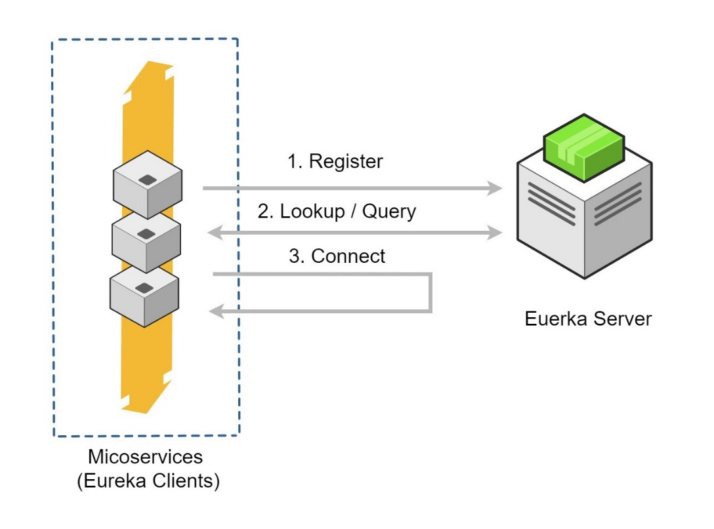
Circuit Breaker: In microservices based architecture, one service might depend on another service and if one service goes down then failures may cascade to other services as well. Spring Cloud provides Netflix Hystrix based Circuit Breaker to handle these kinds of issues.
Spring Cloud Data Streams: These days we may need to work with huge volumes of data streams using Kafka or Spark etc. Spring Cloud Data Streams provides higher-level abstractions to use those frameworks in an easier manner.
Spring Cloud Security: Some of the microservices needs to be accessible to authenticated users only and most likely we might want a Single Sign-On feature to propagate the authentication context across services. Spring Cloud Security provides authentication services using OAuth2.
Distributed Tracing: simple end-user action might trigger a chain of microservice calls, there should be a mechanism to trace the related call chains. We can use Spring Cloud Sleuth with Zipkin to trace the cross-service invocations.
Spring Cloud Contract: There is a high chance that separate teams work on different microservices. There should be a mechanism for teams to agree upon API endpoint contracts so that each team can develop their APIs independently. Spring Cloud Contract helps to create such contracts and validate them by both service provider and consumer.
1. Spring Cloud Config Server
SpringBoot provides lot of flexibility in externalizing configuration properties via properties or YAML files. We can also configure properties for each environment (dev, qa, prod etc) separately using profile specific configuration files such as application.properties, application-dev.properties, application-prod.properties etc. But once the application is started we can not update the properties at runtime. If we change the properties we need to restart the application to use the updated configuration properties.
We can create a Spring Cloud Config Server which provides the configuration values for all of our microservices. We can use git, svn, database or Consul as a backend to store the configuration parameters.
Spring Cloud Config Server is nothing but a SpringBoot application with a configured configuration properties source. The configuration source can be a git repository, svn repository or Consul service (https://www.consul.io/).
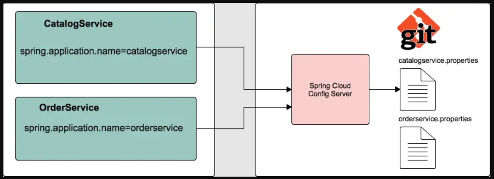
Then we can configure the location of Spring Cloud Config server in our microservice so that it will load all the properties when we start the application. In addition to that, whenever we update the properties we can invoke /refresh REST endpoint in our microservice so that it will reload the configuration changes without requiring to restart the application.
1. SpringCloud – Example
We are going to build a simple shopping cart application and assume we are going to start with the following microservices:
-
catalog-service: It provides REST API to provide catalog information like products.
-
inventory-service: It provides REST API to manage product inventory.
-
cart-service: It provides REST API to hold the customer cart details.
-
order-service: It provides REST API to manage orders.
-
customer-service: It provides REST API to manage customer information.
-
shoppingcart-ui: It is customer facing front-end web application.
We are going to build various services and REST endpoints as we go through various microservice concepts.
a.Catalog-Service
Create a SpringBoot app with Web, JPA, MySQL, Actuator, DevTools, Lombok starters
Database : MySQL as Docker Container
We are going to use Docker and run MySQL as a Docker container.
docker-compose.yml
version: '3'
services:
mysqldb:
image: 'mysql:5.7'
container_name: mysqldb
ports:
- '3306:3306'
environment:
MYSQL_ROOT_PASSWORD: passw0rd
MYSQL_DATABASE: catalog
Download & Start MySQL Docker container
docker-compose up
Open any MySQL Editor & provide login details
`products` (
`id` (20) ,
`code` (255) 'latin1_swedish_ci',
`description` (255) 'latin1_swedish_ci',
`name` (255) 'latin1_swedish_ci',
`price` ,
(`id`) ,
`UK_57ivhy5aj3qfmdvl6vxdfjs4p` (`code`)
)
='latin1_swedish_ci'
=
;

application.properties
server.port=8181
logging.level.catalog=debug
spring.datasource.driver-class-name=com.mysql.jdbc.Driver
spring.datasource.url=jdbc:mysql://localhost:3306/catalog?useSSL=false
spring.datasource.username=root
spring.datasource.password=passw0rd
spring.datasource.initialization-mode=always
spring.jpa.hibernate.ddl-auto=update
spring.jpa.show-sql=true
//expose all the Actuator endpoints
management.endpoints.web.exposure.include=*
Pom.xml
<?xml version= encoding=?>
<project xmlns= xmlns:xsi=
xsi:schemaLocation=>
<modelVersion>4.0.0</modelVersion>
<parent>
<groupId>org.springframework.boot</groupId>
<artifactId>spring-boot-starter-parent</artifactId>
<version>2.5.3</version>
<relativePath/> <!-- lookup parent from repository -->
</parent>
<groupId>catalog</groupId>
<artifactId>catalog-service</artifactId>
<version>0.0.1-SNAPSHOT</version>
<name>catalog-service</name>
<description>Demo project for Spring Boot</description>
<properties>
<java.version>11</java.version>
</properties>
<dependencies>
<dependency>
<groupId>org.springframework.boot</groupId>
<artifactId>spring-boot-starter-actuator</artifactId>
</dependency>
<dependency>
<groupId>org.springframework.boot</groupId>
<artifactId>spring-boot-starter-data-jpa</artifactId>
</dependency>
<dependency>
<groupId>org.springframework.boot</groupId>
<artifactId>spring-boot-starter-web</artifactId>
</dependency>
<dependency>
<groupId>org.springframework.boot</groupId>
<artifactId>spring-boot-devtools</artifactId>
<scope>runtime</scope>
<optional>true</optional>
</dependency>
<dependency>
<groupId>mysql</groupId>
<artifactId>mysql-connector-java</artifactId>
<scope>runtime</scope>
</dependency>
<dependency>
<groupId>org.projectlombok</groupId>
<artifactId>lombok</artifactId>
<optional>true</optional>
</dependency>
<dependency>
<groupId>org.springframework.boot</groupId>
<artifactId>spring-boot-starter-test</artifactId>
<scope>test</scope>
</dependency>
</dependencies>
<build>
<plugins>
<plugin>
<groupId>org.springframework.boot</groupId>
<artifactId>spring-boot-maven-plugin</artifactId>
<configuration>
<excludes>
<exclude>
<groupId>org.projectlombok</groupId>
<artifactId>lombok</artifactId>
</exclude>
</excludes>
</configuration>
</plugin>
</plugins>
</build>
</project>
catalog.entity;
lombok.Data;
javax.persistence.*;
@Data
@Entity
@Table(name = "products")
Product {
@Id
@GeneratedValue(strategy = GenerationType.)
Long id;
@Column(nullable = , unique = )
String code;
@Column(nullable = )
String name;
String description;
price;
}
catalog.repository;
ProductRepository JpaRepository<Product, Long> {
Optional<Product> findByCode(String code);
}
@Service
@Transactional
@Slf4j
ProductService {
ProductRepository productRepository;
@Autowired
ProductService(ProductRepository productRepository) {
.productRepository = productRepository;
}
List<Product> findAllProducts() {
List<Product> list = productRepository.findAll();
(Product p : list) {
System..println(p.getName());
}
list;
}
Optional<Product> findProductByCode(String code) {
productRepository.findByCode(code);
}
}
@RestController
@RequestMapping("/api/products")
@Slf4j
ProductController {
ProductService productService;
@Autowired
ProductController(ProductService productService) {
.productService = productService;
}
@GetMapping("")
List<Product> allProducts() {
productService.findAllProducts();
}
@GetMapping("/{code}")
Product productByCode(@PathVariable String code) {
productService.findProductByCode(code).orElseThrow(() -> ProductNotFoundException("Product with code [" + code + "] doesn't exist"));
}
}
Okay, now we can start our SpringBoot application and hit http://localhost:8181/api/products
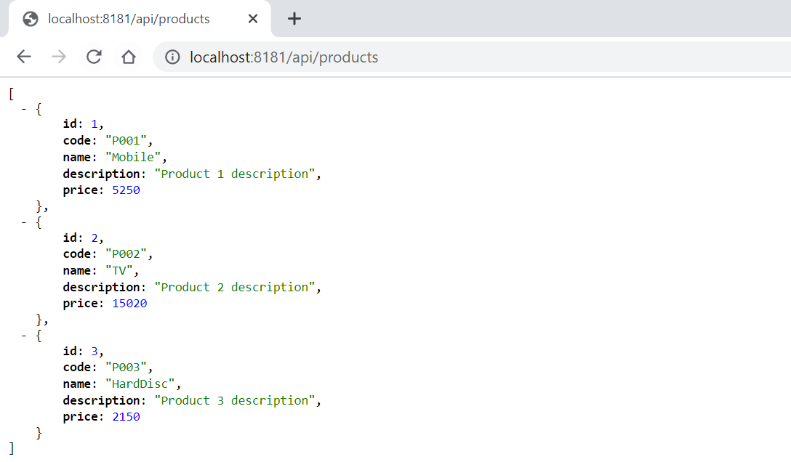
2. Spring Cloud Config Server – to Store our Properties
SpringBoot provides lot of flexibility in externalizing configuration properties via properties or YAML files. We can also configure properties for each environment (dev, qa, prod etc) separately using profile specific configuration files such as application.properties, application-dev.properties, application-prod.properties etc.
But once the application is started we can not update the properties at runtime. If we change the properties we need to restart the application to use the updated configuration properties.
To Solve this, We can use Spring Cloud Config Server to centralize all the applications configuration and use Spring Cloud Config Client module from the applications to consume configuration properties from Config Server. We can also update the configuration properties at runtime without requiring to restart the application.
Spring Cloud Config Server is nothing but a SpringBoot application with a configured configuration properties source. The configuration source can be a git , svn or any repository.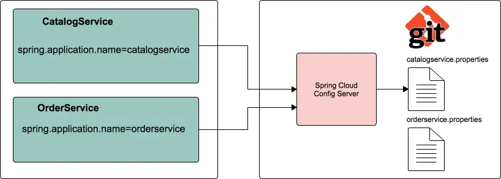
Steps to configure Spring Cloud Config Server
1.Create a git repo to store our properties with different envromnets.
https://github.com/smlcodes/SpringConfigServer
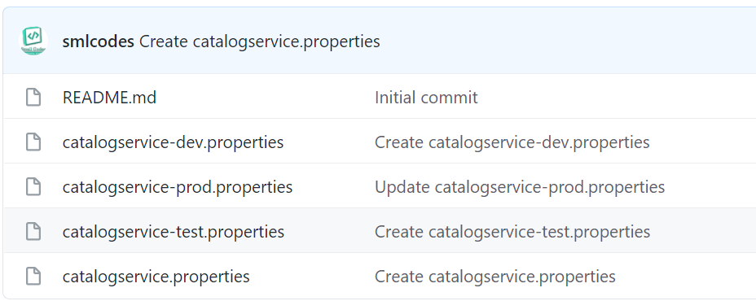
2.Let us create a SpringBoot application spring-cloud-config-server from http://start.spring.io by selecting the starters Config Server and Actuator.
3.To make our SpringBoot application as a SpringCloud Config Server, we just need to add @EnableConfigServer annotation to the main entry point class
@SpringBootApplication
@EnableConfigServer
SpringCloudConfigServerApplication {
main(String[] args) {
SpringApplication.(SpringCloudConfigServerApplication., args);
}
}
4.configure git url property pointing to the git repository in application.propertis
spring.config.name=configserver
server.port=8182
spring.cloud.config.server.git.uri=https://github.com/smlcodes/SpringConfigServer.git
spring.cloud.config.server.git.default-label=main
management.security.enabled=false
5.Start the application. Spring Cloud Config Server exposes the following REST endpoints to get application specific configuration properties:
/{application}/{profile}[/{label}]
/{application}-{profile}.yml
/{label}/{application}-{profile}.yml
/{application}-{profile}.properties
/{label}/{application}-{profile}.properties
Here {application} refers to value of spring.config.name property, {profile} is an active profile and {label} is an optional git label (defaults to -master”).
Now if you access the URL http://localhost:8182/catalogservice/default then you will get the following response with catalogservice default configuration details:
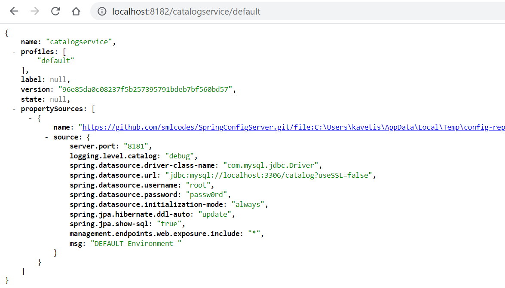
Similary we can enviroment propertils like
Spring Cloud Config Client Example
Let us see how we can create a SpringBoot application and use configuration properties from Config Server instead of putting them inside the application.
1.Update catalog-service with Config Client, Web and Actuator starters.
<dependency>
<groupId>org.springframework.boot</groupId>
<artifactId>spring-boot-starter-actuator</artifactId>
</dependency>
<dependency>
<groupId>org.springframework.cloud</groupId>
<artifactId>spring-cloud-starter-config</artifactId>
</dependency>
<dependency>
<groupId>org.springframework.cloud</groupId>
<artifactId>spring-cloud-starter-bootstrap</artifactId>
</dependency>
2.Create REST Resource
Add one RestController to view the Server side property values in the response. And add a method to request/response the perticalur value from Repository values.
@RefreshScope
@RestController
SpringCloudConfigClinet{
@Value("${msg:Config Server is not working. Please check...}")
String msg;
@GetMapping("/msg")
String getMsg() {
.msg;
}
}
Usually in SpringBoot application we configure properties in application.properties. But while using Spring Cloud Config Server we use bootstrap.properties or bootstrap.yml file to configure the URL of Config Server.
Configure the following properties in src/main/resources/bootstrap.properties:
server.port=8181
spring.application.name=catalogservice
spring.cloud.config.uri=http://localhost:8182
management.security.enabled=false
Note that the value of spring.application.name property should match with base filename (catalogservice) in config-repo
Now run the following catalog-service main entry point class. We can access the actuator endpoint http://localhost:8181/env to see all the configuration properties.
You open http://localhost:8181/msg you get property value of msg 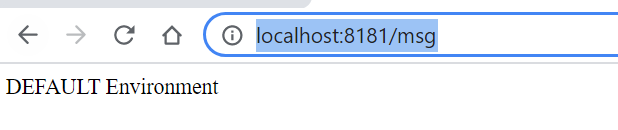
Ref. https://www.sivalabs.in/2017/08/spring-cloud-tutorials-introduction-to-spring-cloud-config-server/
Now if we delete the application.properties file, the application will works normally.
3. Spring Cloud Service Registry and Discovery
In the microservices world, Service Registry and Discovery plays an important role because we most likely run multiple instances of services and we need a mechanism to call other services without hardcoding their hostnames or port numbers.
-
Think of it as a lookup service where microservices (clients) can register themselves and discover other registered microservices.
-
When a client microservice registers with Eureka it provides metadata such as host, port, and health indicator thus allowing for other microservices to discover it.
-
The discovery server expects a regular heartbeat message from each microservice instance. If an instance begins to consistently fail to send a heartbeat, the discovery server will remove the instance from his registry.
| Netflix Component Name | Functionality |
|---|---|
| Eureka | Service Registration and Discovery |
| Ribbon | Dynamic Routing and Load Balancer |
| Hystrix | Circuit Breaker |
| Zuul | Edge Server |
Steps to create Netflix Eureka based Service Registry
add Eureka Server starter.
<dependency>
<groupId>org.springframework.cloud</groupId>
<artifactId>spring-cloud-starter-netflix-eureka-server</artifactId>
</dependency>
We need to add @EnableEurekaServer annotation on main class to make our SpringBoot application a Eureka Server based Service Registry.
@SpringBootApplication
@EnableEurekaServer
SpringCloudEurekaServerApplication {
main(String[] args) {
SpringApplication.(SpringCloudEurekaServerApplication., args);
}
}
By default, each Eureka Server is also a Eureka client and needs at least one service URL to locate a peer. As we are going to have a single Eureka Server node (Standalone Mode), we are going to disable this client-side behavior by configuring the following properties in application.properties file.
spring.application.name=service-registry
server.port=8761
eureka.instance.hostname=localhost
eureka.instance.client.registerWithEureka=false
eureka.instance.client.fetchRegistry=false
eureka.instance.client.serviceUrl.defaultZone=http://${eureka.instance.hostname}:${server.port}/eureka/
Netflix Eureka Service provides UI where we can see all the details about registered services.Now run the main class, check url http://localhost:8761/
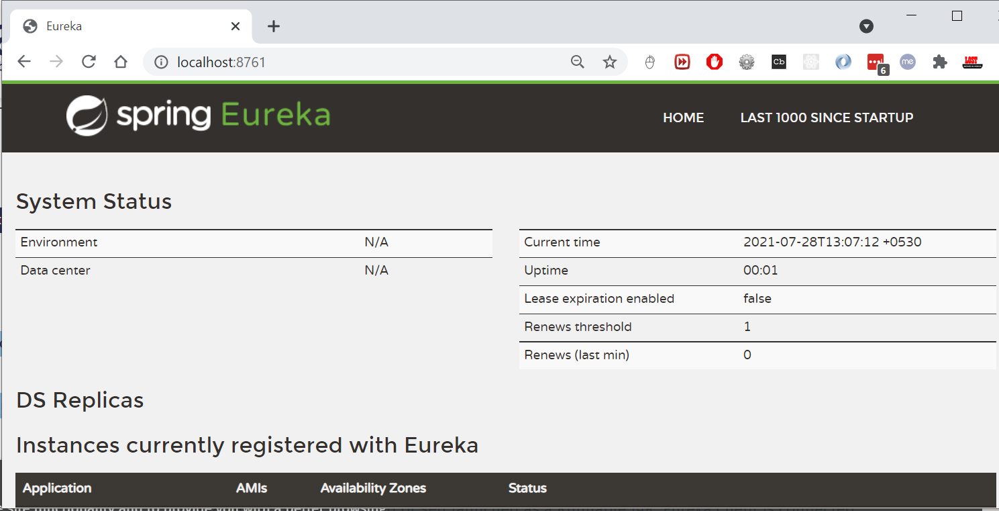
Register Catalog-Service to Eureka
Add the Eureka Discovery starter to catalog-service which will add the following dependency.
<dependency>
<groupId>org.springframework.cloud</groupId>
<artifactId></artifactId>
</dependency>
we just need to configure eureka.client.service-url.defaultZone property in application.properties to automatically register with the Eureka Server.
eureka.client.service-url.defaultZone=http://localhost:8761/eureka/
With this configuration in place, start catalog-service and visit http://localhost:8761. You should see catalog-service is registered with SERVICE ID as CATALOG-SERVICE. 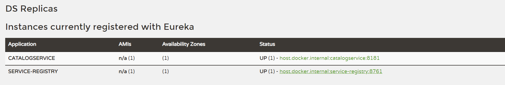
b.Inventory-service
Create inventory-service SpringBoot application with Web, JPA, H2/MySQL, Actuator, Config Client and Eureka Discovery starters.
`inventory` (
`id` (20) ,
`quantity` (11) ,
`product_code` (255) 'latin1_swedish_ci',
(`id`) ,
`UK_40r5uxke3xlbf7qeqfhklx0uc` (`product_code`)
)
='latin1_swedish_ci'
=
;
Model class
@Data
@Entity
@Table(name = "inventory")
InventoryItem {
@Id
@GeneratedValue(strategy = GenerationType.)
Long id;
@Column(name = "product_code", nullable = , unique = )
String productCode;
@Column(name = "quantity")
Integer availableQuantity = 0;
}
InventoryItemRepository
InventoryItemRepository JpaRepository<InventoryItem, Long> {
Optional<InventoryItem> findByProductCode(String productCode);
}
InventoryController
@RestController
@Slf4j
InventoryController {
InventoryItemRepository inventoryItemRepository;
@Autowired
InventoryController(InventoryItemRepository inventoryItemRepository) {
.inventoryItemRepository = inventoryItemRepository;
}
@GetMapping("/api/inventory/{productCode}")
ResponseEntity<InventoryItem> findInventoryByProductCode(@PathVariable("productCode") String productCode) {
.info("Finding inventory for product code :" + productCode);
Optional<InventoryItem> inventoryItem = inventoryItemRepository.findByProductCode(productCode);
(inventoryItem.isPresent()) {
ResponseEntity(inventoryItem, HttpStatus.);
} {
ResponseEntity(HttpStatus.);
}
}
@GetMapping("/api/inventory")
List<InventoryItem> getInventory() {
.info("Finding inventory for all products ");
inventoryItemRepository.findAll();
}
}
InventoryServiceApplication
@SpringBootApplication
InventoryServiceApplication {
main(String[] args) {
SpringApplication.(InventoryServiceApplication., args);
System..println(" ");
System..println("InventoryService ® ");
System..println(" ");
System..println(" ===============================================");
System..println("http://localhost:9992/api/inventory/");
System..println(" ===============================================");
}
}
bootstrap.properties
server.port=9992
spring.application.name=inventoryservice
spring.cloud.config.uri=http://localhost:501
management.security.enabled=false
eureka.client.service-url.defaultZone=http://localhost:8761/eureka/
Test API : http://localhost:9992/api/inventory/
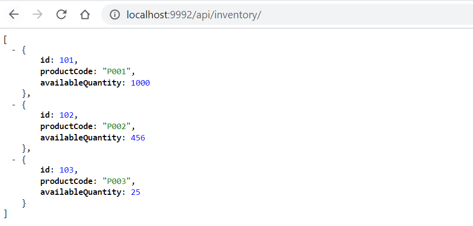
Now we can see Invetory Service in Eureka Server 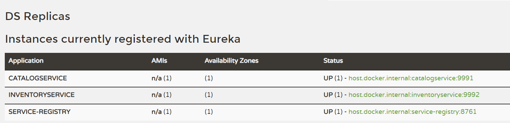
Ref. https://www.sivalabs.in/2018/03/microservices-springcloud-eureka/
4. Spring Cloud Load balancing
Lets remove server.port=9992 from both boostrap & git property file. And start 2 Inventoy instance manullay.
java -jar -Dserver.port=9898 inventory-service-0.0.1-SNAPSHOT.jar
java -jar -Dserver.port=9899 inventory-service-0.0.1-SNAPSHOT.jar
Now you can visit Eureka Dashboard http://localhost:8761/ and see 3 instances of inventory-service registered.
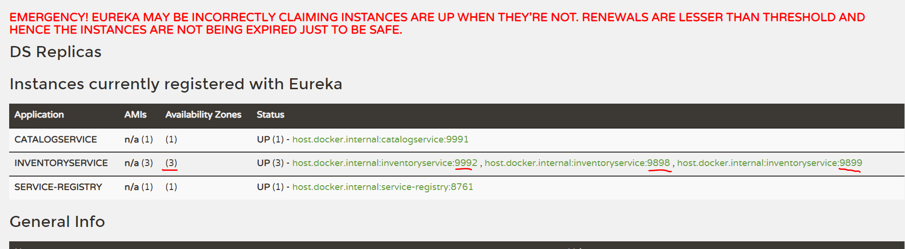
Suppoce we if want to call Inventory Service from Catalog Srervice, which of above 3 instance will call ?
Suppose we want to invoke inventory-service REST endpoint from catalog-service. We can use RestTemplate to invoke REST endpoint but there are 2 instances running.
We can register RestTemplate as a Spring bean with @LoadBalanced annotation. The RestTemplate with @LoadBalanced annotation will internally use Ribbon LoadBalancer to resolve the ServiceID and invoke REST endpoint using one of the available servers.
Catalog-service/ CatalogServiceApplication.java
@SpringBootApplication
CatalogServiceApplication {
@Bean
@LoadBalanced
RestTemplate restTemplate() {
RestTemplate();
}
main(String[] args) {
SpringApplication.run(CatalogServiceApplication., args);
}
}
Use RestTemplate to invoke inventory-service endpoint from catalog-service/ProductService.java
@Service
@Transactional
@Slf4j
ProductService {
ProductRepository productRepository;
RestTemplate restTemplate;
@Autowired
ProductService(ProductRepository productRepository, RestTemplate restTemplate) {
.productRepository = productRepository;
.restTemplate = restTemplate;
}
Optional<Product> findProductByCode(String code) {
Optional<Product> productOptional = productRepository.findByCode(code);
(productOptional.isPresent()) {
.info("Fetching inventory level for product_code: "+code);
ResponseEntity<ProductInventoryResponse> itemResponseEntity =
restTemplate.getForEntity("http://inventory-service/api/inventory/{code}",
ProductInventoryResponse.,
code);
(itemResponseEntity.getStatusCode() == HttpStatus.) {
Integer quantity = itemResponseEntity.getBody().getAvailableQuantity();
.info("Available quantity: "+quantity);
} {
.error("Unable to get inventory level for product_code: "+code +
", StatusCode: "+itemResponseEntity.getStatusCode());
}
}
productOptional;
}
}
Note that we have used http://inventory-service/api/inventory/{code} instead of http://localhost:9898/api/inventory/{code} or http://localhost:9999/api/inventory/{code}
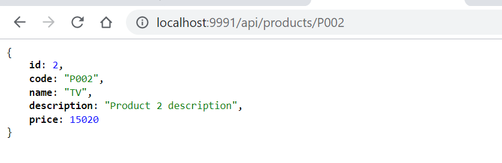
With this kind of automatic Service Registration and Discovery mechanism, we no need to worry about how many instances are running and what are their hostnames and ports etc.
5. Spring Cloud Circuit Breaker using Netflix Hystrix
In the microservices world, to fulfill a client request one microservice may need to talk to other microservices. We should minimize this kind of direct dependencies on other microservices but in some cases it is unavoidable. If a microservice is down or not functioning properly then the issue may cascade up to the upstream services.
Netflix created Hystrix library implementing Circuit Breaker pattern to address these kinds of issues. We can use Spring Cloud Netflix Hystrix Circuit Breaker to protect microservices from cascading failures.
Steps to Spring Cloud Circuit Breaker using Netflix Hystrix
From catalog-service we are invoking REST endpoint on inventory-service to get the inventory level of a product. What if inventory-service is down? What if inventory-service is taking too long to respond thereby slowing down all the services depending on it? We would like to have some timeouts and implement some fallback mechanism.
Add Hystrix starter to catalog-service.
<dependency>
<groupId>org.springframework.cloud</groupId>
<artifactId>spring-cloud-starter-netflix-hystrix</artifactId>
</dependency>
To enable Circuit Breaker add @EnableCircuitBreaker annotation on catalog-service entry-point class.
@SpringBootApplication
@EnableCircuitBreaker
CatalogServiceApplication {
@Bean
@LoadBalanced
RestTemplate restTemplate() {
RestTemplate();
}
main(String[] args) {
SpringApplication.(CatalogServiceApplication., args);
}
}
@Service
@Slf4j
InventoryServiceClient {
RestTemplate restTemplate;
@Autowired
InventoryServiceClient(RestTemplate restTemplate) {
.restTemplate = restTemplate;
}
@HystrixCommand(fallbackMethod = "getDefaultProductInventoryByCode")
Optional<ProductInventoryResponse> getProductInventoryByCode(String productCode)
{
ResponseEntity<ProductInventoryResponse> itemResponseEntity =
restTemplate.getForEntity("http://inventory-service/api/inventory/{code}",
ProductInventoryResponse.,
productCode);
(itemResponseEntity.getStatusCode() == HttpStatus.) {
Optional.(itemResponseEntity.getBody());
} {
.error("Unable to get inventory level for product_code: " + productCode + ", StatusCode: " + itemResponseEntity.getStatusCode());
Optional.();
}
}
@SuppressWarnings("unused")
Optional<ProductInventoryResponse> getDefaultProductInventoryByCode(String productCode) {
.info("Returning default ProductInventoryByCode for productCode: "+productCode);
ProductInventoryResponse response = ProductInventoryResponse();
response.setProductCode(productCode);
response.setAvailableQuantity(50);
Optional.(response);
}
}
We have annotated the method from where we are making a REST call with @HystrixCommand(fallbackMethod = -getDefaultProductInventoryByCode”) so that if it doesn’t receive the response within the certain time limit the call gets timed out and invoke the configured fallback method.
The fallback method should be defined in the same class and should have the same signature. In the fallback method getDefaultProductInventoryByCode() we are setting the availableQuantity to 50, obviously, this behavior depends on what business wants.
Spring Cloud also provides a nice dashboard to monitor the status of Hystrix commands. Create a Spring Boot application with Hystrix Dashboard starter and annotate the main entry-point class with @EnableHystrixDashboard.
<dependency>
<groupId>org.springframework.cloud</groupId>
<artifactId>spring-cloud-starter-netflix-hystrix-dashboard</artifactId>
</dependency>
Now in Hystrix Dashboard home page enter http://localhost:8181/actuator/hystrix.stream as stream URL and give Catalog Service as Title and click on Monitor Stream button.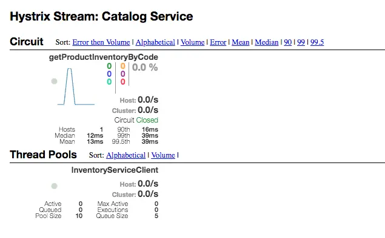
6. Spring Cloud Zuul Proxy as API Gateway
Spring Cloud provides Zuul proxy, similar to Nginx, that can be used to create API Gateway.
API Gateway, aka Edge Service, provides a unified interface for a set of microservices so that clients no need to know about all the details of microservices internals. However, there are some pros and cons of using API Gateway pattern in microservices architecture.
Pros:
-
Provides easier interface to clients
-
Can be used to prevent exposing the internal microservices structure to clients
-
Allows to refactor microservices without forcing the clients to refactor consuming logic
-
Can centralize cross-cutting concerns like security, monitoring, rate limiting etc
Cons:
-
It could become a single point of failure if proper measures are not taken to make it highly available
-
Knowledge of various microservice API may creep into API Gateway
7. Distributed Tracing with Spring Cloud Sleuth and Zipkin
One of the challenges in microservices architecture is the ability to debug issues. A simple user action might trigger a chain of downstream microservice calls. It would be tedious to trace the logs related to a particular user action across microservices.
We can use Spring Cloud Sleuth to handle these kinds of issues. Spring Cloud Sleuth provides the distributed tracing capabilities and we can also export these trace information to Zipkin to visualize the call traces.
Ref.
https://www.sivalabs.in/2018/03/microservices-using-springboot-spring-cloud-part-1-overview/
https://github.com/sivaprasadreddy/spring-boot-microservices-series